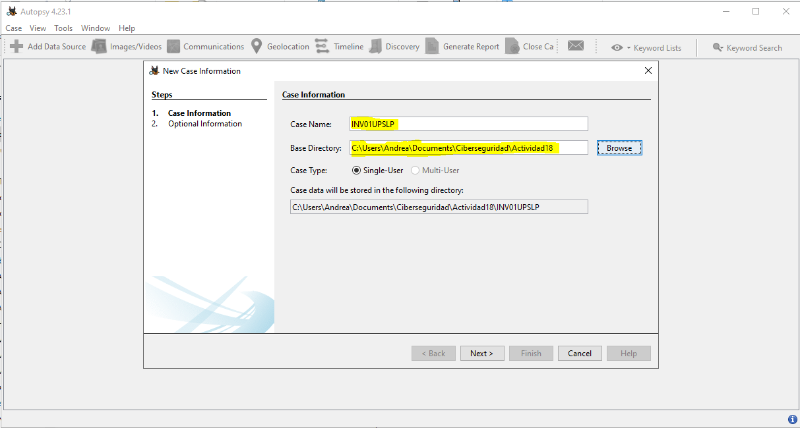
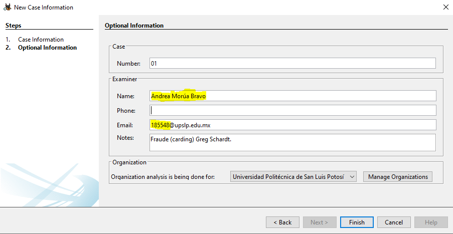
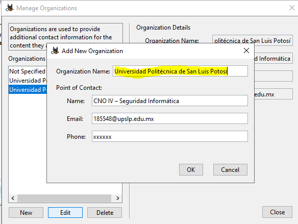
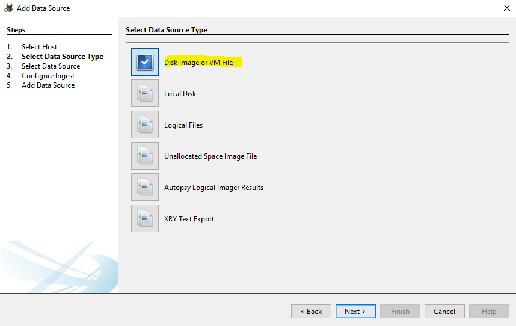
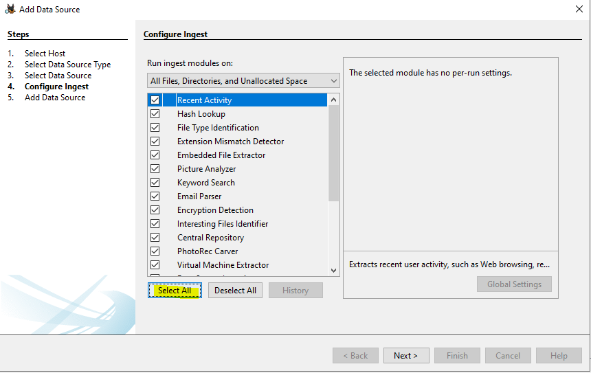
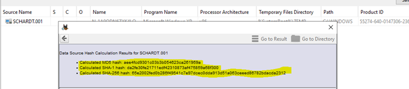
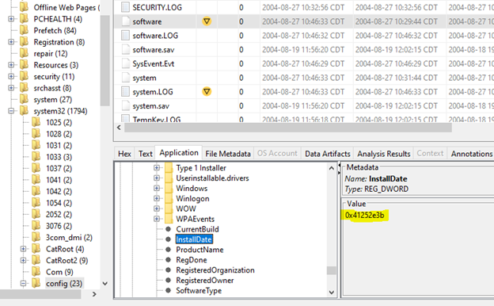
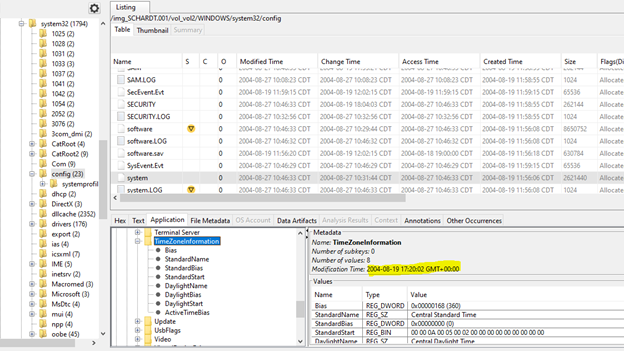
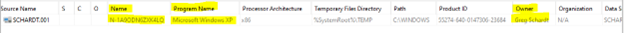
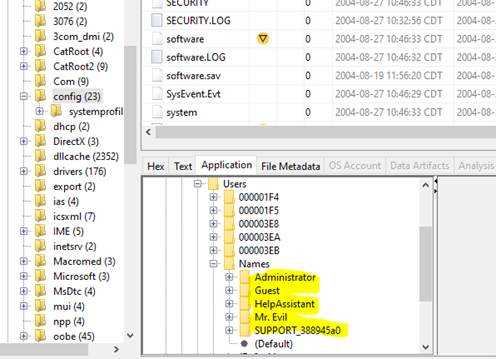

La investigación forense: la huella digital de un cibercriminal
Objetivo
Analizar forensemente la imagen de disco SCHARDT.001 (escenario de entrenamiento forense digital de la NSA Cybersecurity y NIST CFReDS) utilizando Autopsy 4.23.1, con el propósito de verificar la integridad criptográfica de la evidencia, inspeccionar las colmenas binarias del Registro de Windows, decodificar marcas de tiempo y reconstruir la línea temporal que vincula el equipo abandonado con el sospechoso Greg Schardt («Mr. Evil»).
Introducción y escenario del caso
El 20 de septiembre de 2004, una computadora portátil Dell CPi (número de serie VLQLW) fue hallada abandonada junto con una tarjeta PCMCIA inalámbrica y una antena externa 802.11b de fabricación casera. Las líneas de investigación apuntan a que el equipo fue utilizado para actividades de intrusión inalámbrica y fraude financiero (carding) por el sospechoso Greg Schardt, conocido en línea bajo el seudónimo «Mr. Evil».
De acuerdo con reportes de asociados, el sospechoso estacionaba su vehículo dentro del alcance de puntos de acceso Wi-Fi públicos (como cafeterías Starbucks y hotspots de T-Mobile) para interceptar tráfico de red en claro y capturar números de tarjetas de crédito, nombres de usuario y contraseñas. El análisis se centra en hallar rastros del sistema, cuentas locales y marcas temporales que demuestren la autoría y el periodo operativo del sospechoso.
Información general del caso en Autopsy
- Nombre del Caso (Case Name):
INV01UPSLP(Número de caso:01) - Directorio Base:
C:\Users\Andrea\Documents\Ciberseguridad\Actividad18 - Fuente de Evidencia: Imagen forense fragmentada
SCHARDT.001(8 partes, NIST CFReDS) - Zona Horaria Configurada:
(GMT-6:00) America/Mexico_City - Examinador Asignado: Andrea Morúa Bravo (
185548@upslp.edu.mx) — Fecha:16/11/2026 - Organización: Universidad Politécnica de San Luis Potosí (Contacto:
CNO IV - Seguridad Informática) - Notas del Caso: Fraude (carding) Greg Schardt.
Desarrollo forense: configuración del caso e ingesta
A continuación se detalla el flujo metodológico seguido en Autopsy 4.23.1 para la creación del caso, incorporación de la imagen forense y ejecución de módulos de análisis:
Paso 1: Creación del caso y datos del examinador
Se descarga el conjunto de archivos de evidencia desde el repositorio NIST CFReDS (Hacking Case) en un directorio dedicado. Dentro de Autopsy se selecciona New Case, asignando el identificador INV01UPSLP, las credenciales del examinador y la organización correspondiente (Universidad Politécnica de San Luis Potosí).

INV01UPSLP y directorio base en Autopsy.

Paso 2: Selección del tipo de origen de datos
Tras generar automáticamente el nombre del host a partir de la fuente de datos, se selecciona la opción Disk Image or VM File para cargar la imagen completa SCHARDT.001 con detección automática de tamaño de sector.
-
¿A qué se refiere el tipo de origen «Logical Files»?
Permite analizar archivos o carpetas individuales previamente extraídos de un sistema (como documentos sueltos o directorios específicos), sin incluir la estructura completa del sistema de archivos, sectores de arranque ni espacio no asignado (unallocated space). -
¿A qué se refiere el tipo de origen «Local Disk»?
Permite analizar directamente una unidad física o partición conectada localmente al equipo examinador (como un disco duro interno, memoria USB o tarjeta SD montada en el sistema).

SCHARDT.001.Paso 3: Configuración de módulos de ingesta (Ingest Modules)
En la ventana Configure Ingest se habilitan todos los módulos de análisis disponibles sobre All Files, Directories, and Unallocated Space (incluyendo Recent Activity, Hash Lookup, Keyword Search, Email Parser, Encryption Detection y PhotoRec Carver) para indexar artefactos del sistema operativo y del Registro de Windows.

Cuestionario de análisis forense y hallazgos
1. Verificación de hashes de la imagen forense
- Calculated MD5 hash:
aee4fcd9301c03b3b054623ca261959a - Calculated SHA-1 hash:
da2fe30fe21711edf42310873af475859a68f300 - Calculated SHA-256 hash:
65e2002fed0b286f49541c7e97dcec0dda913d51a063ceeed86782bdacda2312 - ¿Coinciden el hash de adquisición y verificación? Sí coinciden exactamente con los valores publicados por NIST CFReDS (verificados en Data Source Integrity).

SCHARDT.001.2. Sistema operativo utilizado en la computadora
- Sistema Operativo:
Microsoft Windows XP (x86) - Product ID:
55274-640-0147306-23684 - Directorio de Instalación:
C:\WINDOWS(Ubicación: Data Artifacts → Operating System Information)
3. Fecha de instalación del sistema operativo
- Valor crudo en Registro (
REG_DWORD):0x41252e3b(Decimal:1092955707) - Fecha y hora decodificada: Jueves, 19 de agosto de 2004, 22:48:27 UTC (
17:48:27 UTC-05:00 DST) - Ubicación en el Registro:
SOFTWARE → Microsoft\Windows NT\CurrentVersion\InstallDate

InstallDate (0x41252e3b) mediante el visor de registro de Autopsy.4. Configuración de zona horaria
- Zona horaria configurada:
Central Standard Time/Central Daylight Time(Bias: 0x00000168= 360 minutos) - Última modificación de la clave:
2004-08-19 17:20:02 GMT+00:00 - Ubicación en el Registro:
SYSTEM → ControlSet001\Control\TimeZoneInformation

TimeZoneInformation en la colmena binaria SYSTEM.5. Propietario registrado, nombre del equipo y dominio principal
- Propietario registrado (
RegisteredOwner):Greg Schardt - Nombre de la cuenta de la computadora:
N-1A90DN6ZXK4LQ - Nombre de dominio principal: Sin dominio corporativo asignado (valor
REG_SZvacío enSYSTEM → ControlSet001\Services\Tcpip\Parameters\Domain).

Tcpip\Parameters\Domain sin afiliación a dominio.6. Última fecha y hora registrada de apagado del equipo
- Valor binario en Registro (
REG_BIN):C4 FC 00 07 4D 8C C4 01(formato FILETIME de 64 bits Little-Endian) - Fecha y hora decodificada: 27 de agosto de 2004, 15:46:33 UTC (
10:46:33 CDT) - Ubicación en el Registro:
SYSTEM → ControlSet001\Control\Windows\Shutdown Time
7. Cuentas de usuario registradas en el sistema
- Número total de cuentas: 5 cuentas registradas
- Listado de cuentas:
Administrator,Guest,HelpAssistant,Mr. EvilySUPPORT_388945a0 - Ubicación en el Registro:
SAM → SAM\Domains\Account\Users\Names

SAM, destacando el perfil personalizado Mr. Evil.Reconstrucción de los hechos
Durante la instalación de Windows XP el 19 de agosto de 2004, el equipo fue registrado legalmente a nombre de Greg Schardt (RegisteredOwner). Posteriormente, en la base de datos de seguridad local (SAM), además de las cuatro cuentas predeterminadas del sistema operativo (Administrator, Guest, HelpAssistant y SUPPORT_388945a0), se creó una única cuenta de usuario personalizada bajo el nombre Mr. Evil. Esta coincidencia demuestra de forma directa que Greg Schardt operaba personalmente el equipo bajo el mismo seudónimo señalado en los informes de inteligencia del caso.
La marca de tiempo de instalación del sistema operativo (19/08/2004 22:48:27 UTC / 17:48:27 CDT) concuerda con las fechas de creación de las colmenas del registro en /WINDOWS/system32/config (2004-08-19 11:56:06 CDT - 17:20:02 UTC). Asimismo, la última modificación registrada en las colmenas software y system (2004-08-27 10:46:33 CDT) coincide al segundo con la decodificación de la clave ShutdownTime (27/08/2004 15:46:33 UTC = 10:46:33 CDT), confirmando un periodo activo de uso de ocho días antes de que la laptop fuera abandonada y hallada el 20 de septiembre de 2004.
Conclusión
El análisis forense ejecutado sobre la imagen de la computadora portátil Dell CPi permite concluir de manera sólida que el equipo pertenecía y era operado por Greg Schardt bajo el perfil local Mr. Evil, manteniendo actividad comprobada entre el 19 y el 27 de agosto de 2004 bajo una configuración de zona horaria central (Central Standard Time) y sin afiliación a dominios corporativos.
Documentación de la práctica (PDF)
Puedes consultar el reporte completo de la práctica directamente a continuación o descargarlo en tu dispositivo: